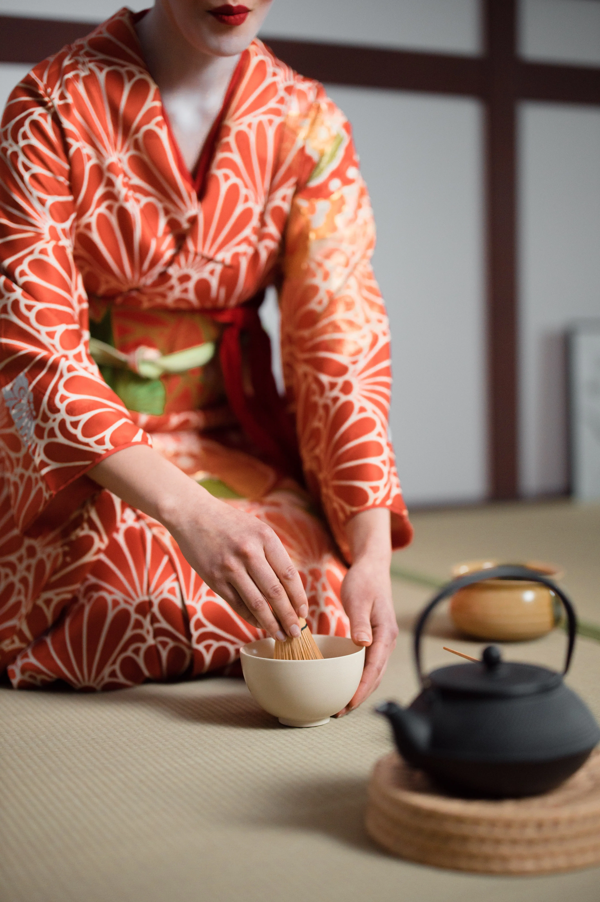
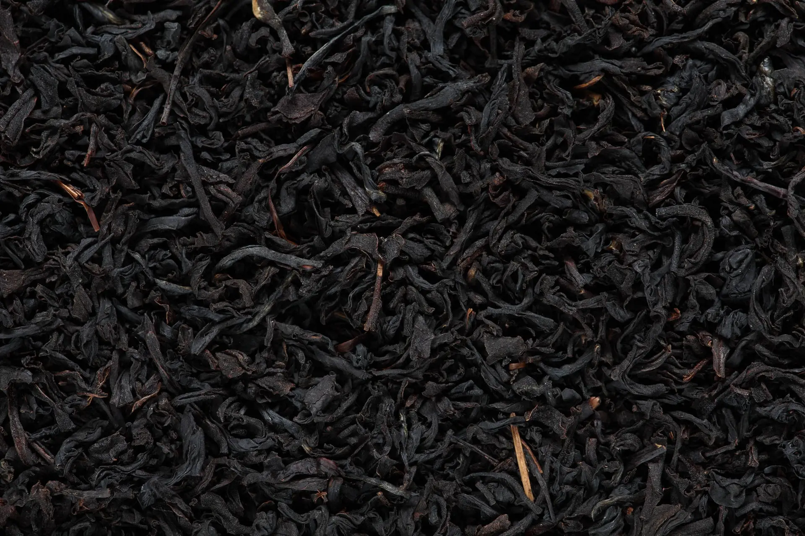
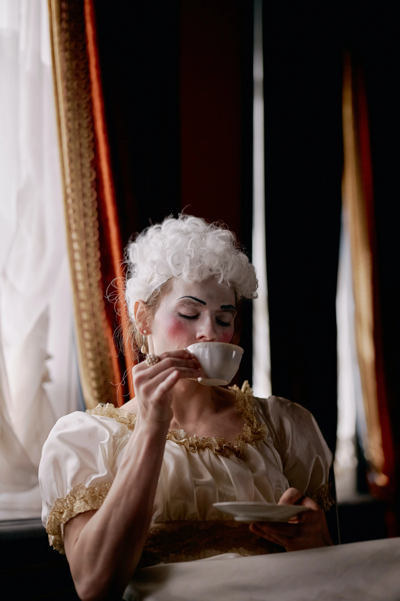
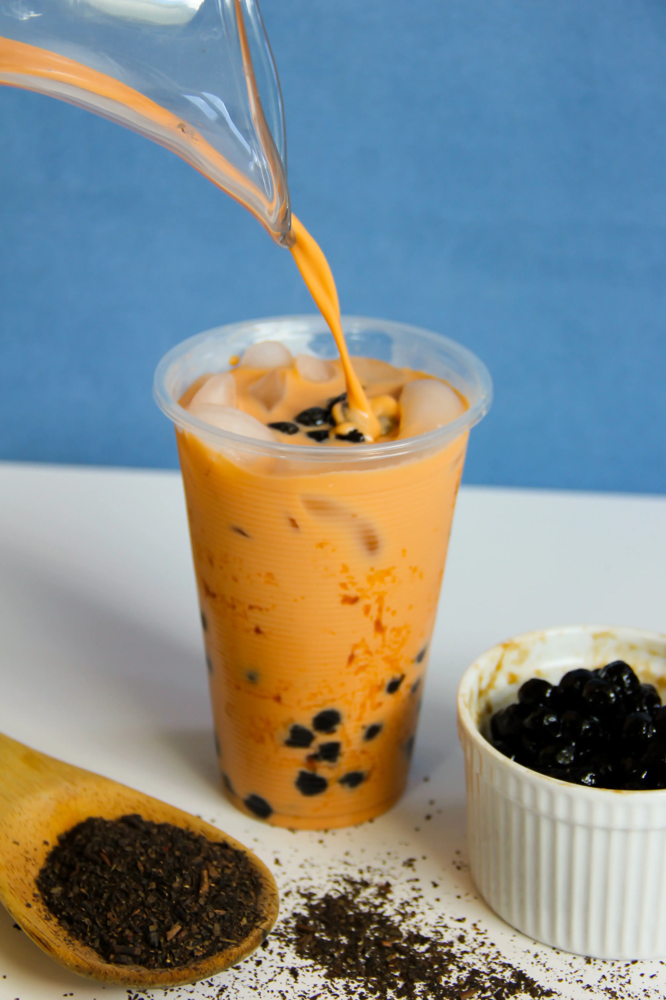

-
Around 3000 B.C.E
The Fated Encounter

When some leaves fell into the water Emperor Shen Nung was boiling. Captivated by the smell he decided to taste. Legends say the Emperor described a warm feeling as he drank the intriguing brew, as if the liquid was investigating every part of his body. He named this beverage ch'a Chinese meaning to check or investigate. Tea was born ... or so the legend goes.
-
Authentic Backstory
This origin story though cool was likely made up by scholars of the Han dynasty. This to give further significance to what a beverage that had strong culture and popularity within society. In actuality tea was likely the result of some attempt to make medicine from individuals of a more common background.
-
Around 200 B.C.E
Han Dynasty
It is said a Han Emperor developed a character that represents ch'a its origin and cultural significance. The character contains the characters for leaves, man and tree in ode to the story of Emperor Shen Nung.
-
Around 1500 C.E
"Chanoyu" Tea Ceremony Perfected
The sacred Japanese tea ceremony, called "Chanoyu", evolved in the late 15th century under the influence of the Japanese philosophies of Zen Buddhism. The ceremony places supreme importance on respecting the act of making and drinking tea. Zen Buddhism honours the essential elements of Japanese philosophy harmony, purity, respect, and tranquillity during Chanoyu. The tea ceremony was so important that special tea rooms were built in backyard gardens, and mastery of the tea ceremony was a required for women to marry.
-
Around 1750 C.E
Enter Black Tea
Up to the mid-17th century, all Chinese tea was Green tea. As foreign trade increased, though, the Chinese growers discovered that they could preserve the tea leaves with a special fermentation process. The resulting Black tea kept its flavour and aroma longer. Preservation is a key mechanism to enable the trade of a commodity. With this tea was ready to be taken truly global.
-
England
Catherine of Braganza wife of Charles II of Portuguese heritage grew up drinking tea. When she married Charles she had grown to love the beverage brought it with her to England. She introduced tea into English nobility and England.
-
Around 1780 C.E
"Afternoon" Tea
Once in the country its soon became the desired beverage amongst the nobility. Anna, Duchess of Bedford was one such noble interested in tea and is also believed to be the inventor of afternoon tea. She craved tea and snacks due to the long break between breakfast and dinner, so another British staple was born.
-
Around 1830 C.E
Birth of Chai
Brittan’s love of tea spread to its overseas territories. India the Jewel of the empire and host to some of Brittan’s largest tea plantations. With so much tea available it was only a while before a unique local culture would develop around tea.
-
Modern Day
The State of Tea
Today millions of cups of tea are enjoyed all over the globe. Many new and inventive ways to leverage teas unique flavour to make something delicious and bring people together have been and continue to be honed. We live in a renaissance of though surrounding tea with each person seeing something different.